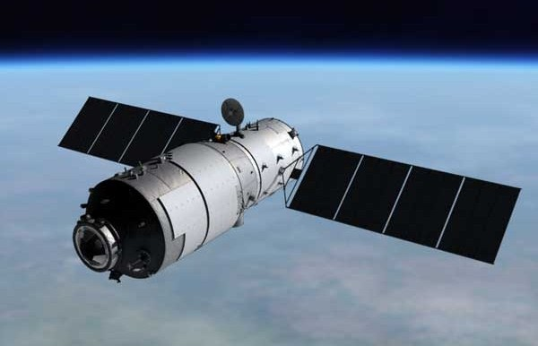
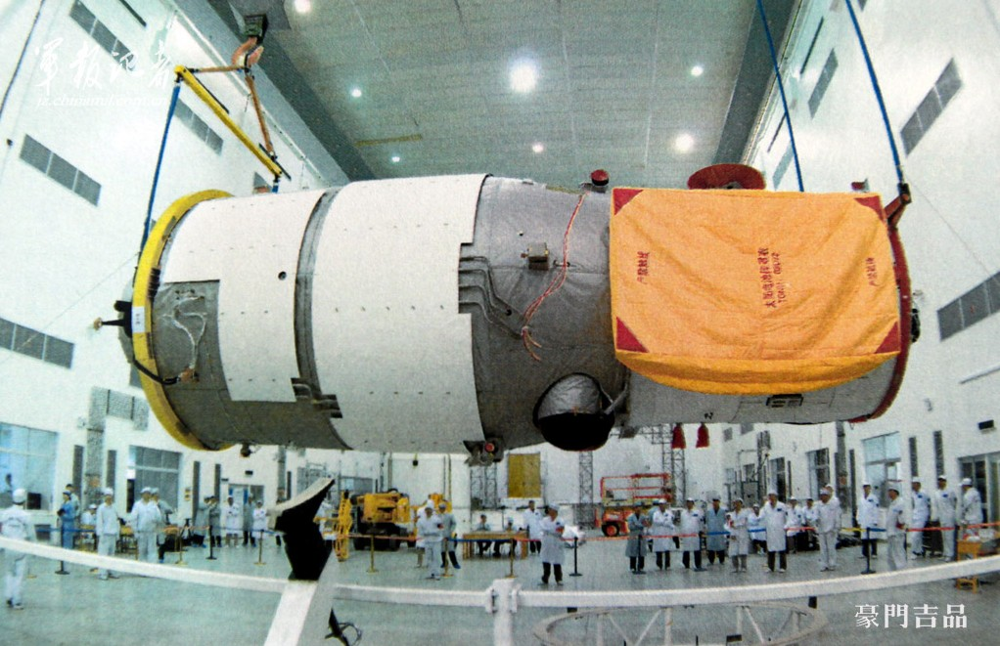
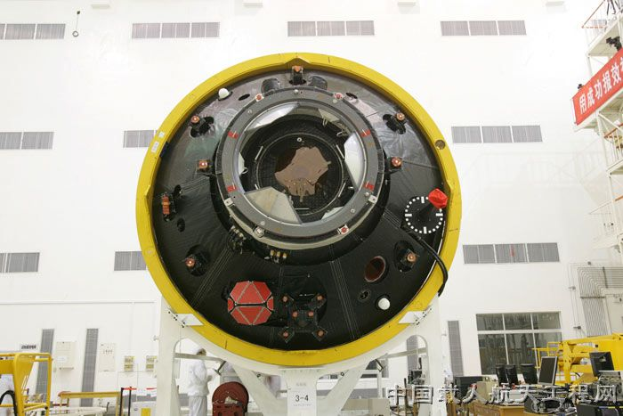
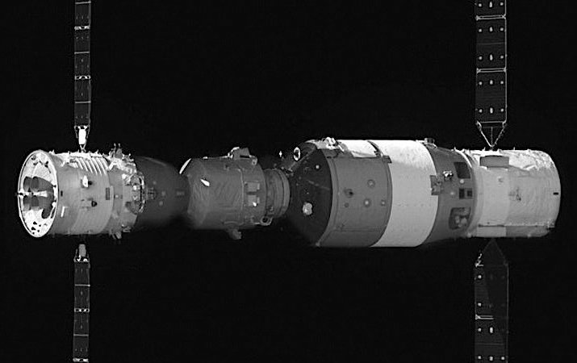
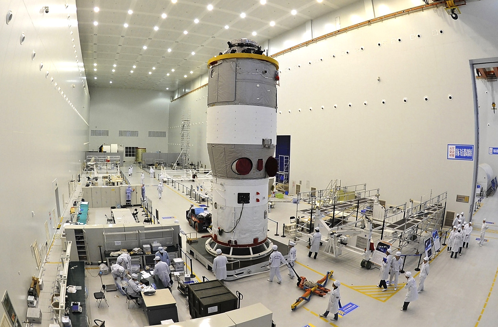
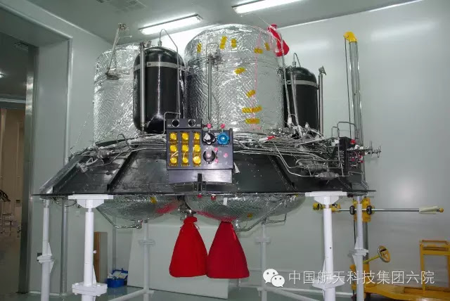

Tiangong-1 wea designed by the China National Space Administration (CNSA) as a single module, crewed "space-laboratory". Autonomous spacecraft would bring crew to the station for short duration stays and return them to Earth. In 2008, the China Manned Space Engineering Office (CMSEO) released a brief description of Tiangong-1, along with its similar sized successor module, Tiangong-2 and a larger module Tiangong-3.
Only Tiangong-1 and 2 were actually flown in orbit. The successes of Tiangong-2, however, made Tiangong-3 redundant and it was not built.
These early Tiangong stations were not designed to be used in orbit for long durations. They were intended as testbeds for materials and technologies to be used in the permanent large modular space station which would follow. The first module of this "Tiangong Space Station" was launched in 2021.
Tiangong-1 and 2 were very similar in structure. They were divided into two primary sections:
* Resource Module - contained the propulsion systems and supported the solar panels,
* Experimental module - a larger, pressurised habitat for the crew to live and work. It also contained one airlock with a passive APAS🔗-type docking connector for the visiting spacecraft.
The experimental module was equipped with exercise gear and two sleep stations. The interior walls of the spacecraft had a two-color paint scheme to help the astronauts maintain their orientation in zero gravity. High-resolution interior cameras allowed crewed missions to be closely monitored from the ground.
Toilet facilities and cooking equipment were provided by the docked Shenzhou spacecraft and not in the module itself. Also one member of the three-person crew slept in the Shenzhou spacecraft to prevent overcrowding.
Mass: 8,506 Kg
Length: 10.4 m
Diameter: 3.35 m
Pressurised Volume: 15 m
Reference: Wikipedia - Tiangong-1
Mass: 8,600 Kg
Length: 10.4 m
Diameter: 3.35 m
Pressurised Volume: 14 m
Reference: Wikipedia - Tiangong-2






{kind=link}
{kind=link}
{kind=link}
{kind=link}
{kind=link}
{kind=link}